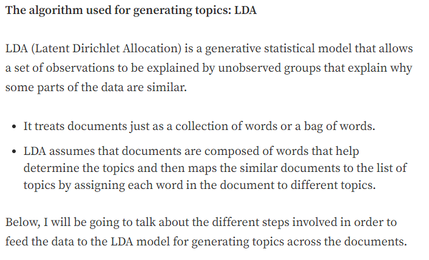
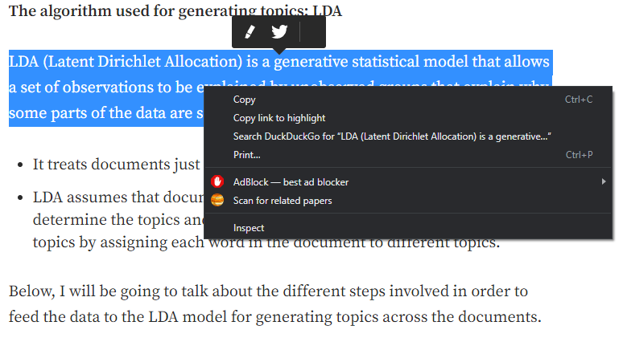
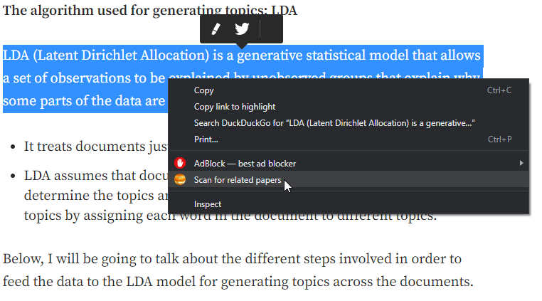
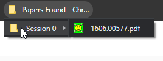
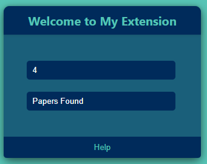

Find some text that you want to scan for papers.
Hold left click while moving the mouse across the entire text to highlight it.
Once highlighted right click the highlighted text and click the "scan for related papers button".
Once step 3 is complete go over to your bookmarks bar and a folder should be present named "Papers Found". Click this folder, then go to session folder with the highest number (this means its the most recent) and pdf links to related papers should be present.
You are able to click onto the chrome extension and alter the amount of papers (default = 5) returned by each scan and the name of the parent folder containing each scan session folder (default = Papers Found - Chrome Extension).
